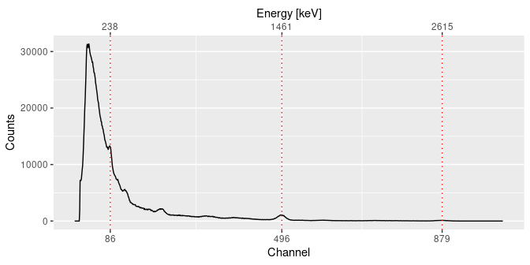
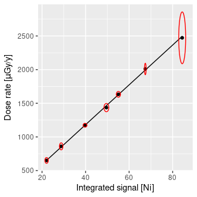

Overview
gamma is intended to process in-situ gamma-ray spectrometry measurements for luminescence dating. This package allows to import, inspect and (automatically) correct the energy scale of the spectrum. It provides methods for estimating the gamma dose rate by the use of a calibration curve. This package only supports Canberra CNF and TKA files.
The gammaShiny package provides an enhanced graphical user interface for the main applications of gamma.
To cite gamma in publications use:
Lebrun, Brice, Nicolas Frerebeau, Guilhem Paradol, Guillaume Guérin,
Norbert Mercier, Chantal Tribolo, Christelle Lahaye, and Magalie
Rizza. 2020. Gamma: An R Package for Dose Rate Estimation from
In-Situ Gamma-Ray Spectrometry Measurements. Ancient TL 38 (2): 1-5.
Une entrée BibTeX pour les utilisateurs LaTeX est
@Article{,
title = {Gamma: An R Package for Dose Rate Estimation from In-Situ Gamma-Ray Spectrometry Measurements},
author = {Brice Lebrun and Nicolas Frerebeau and Guilhem Paradol and Guillaume Guérin and Norbert Mercier and Chantal Tribolo and Christelle Lahaye and Magali Rizza},
year = {2020},
journal = {Ancient TL},
volume = {38},
number = {2},
pages = {1-5},
}Installation
You can install the released version of gamma from CRAN with:
install.packages("gamma")Or install the development version from R-universe with:
install.packages("gamma", repos = "https://crp2a.r-universe.dev")Usage
## A minimal example
library(gamma)
library(magrittr)
## Find the full path to the spectrum file
spc_file <- system.file("extdata/LaBr.CNF", package = "gamma")
## Import the spectrum
spectrum <- read(spc_file)
## Set the expected channel/energy peaks for the energy scale calibration
## Spectrum pre-processing and peak detection
peaks <- spectrum %>%
signal_slice() %>%
signal_stabilize(f = sqrt) %>%
signal_smooth(method = "savitzky", m = 21) %>%
signal_correct(method = "SNIP", n = 100) %>%
peaks_find()
## Set the energy values (in keV)
set_energy(peaks) <- c(238, NA, NA, NA, 1461, NA, NA, 2615)
## Calibrate the energy scale
calib <- energy_calibrate(spectrum, peaks)
## Inspect peaks
plot(calib, peaks)
## Estimate the gamma dose rate of a set of spectra
## You may want to give extra attention to the energy calibration step
spc_file <- system.file("extdata/BDX_LaBr_1/test", package = "gamma")
spectra <- read(spc_file)
## Load the calibration curve for the dose rate estimation
## As this curve is instrument specific, you will have to build your own
## See help(fit_dose)
data("BDX_LaBr_1", package = "gamma")
plot(BDX_LaBr_1)
## Estimate the gamma dose rate
(doses <- dose_predict(BDX_LaBr_1, spectra))
#> names dose_Ni error_Ni dose_NiEi error_NiEi
#> 1 20110523204008 252.2866 12.385847 220.6747 4.393262
#> 2 20110523210008 257.3316 10.527417 219.1303 4.357479
#> 3 20110527205316 247.5890 8.296925 203.0288 4.033624
#> 4 20130809172451 892.1003 22.333994 849.8817 16.868056
#> 5 20130813181639 1065.0899 26.314061 1024.9325 20.341807
#> 6 20160717175757 565.6418 19.579056 496.7518 9.869339
#> 7 20160717181052 480.1928 15.805970 421.8396 8.379351
#> 8 20160717182601 497.7403 15.232673 436.2712 8.663842Contributing
Please note that the gamma project is released with a Contributor Code of Conduct. By contributing to this project, you agree to abide by its terms.
Acknowledgements
This work received a state financial support managed by the Agence Nationale de la Recherche (France) through the program Investissements d’avenir (ref. 10-LABX-0052 and 11-IDEX-0001).